Коммуникационные стили в агентских системах
Как отделить внутреннее состояние персонажа от манеры речи, динамически направлять ответы LLM и учитывать накопленный эмоциональный опыт.
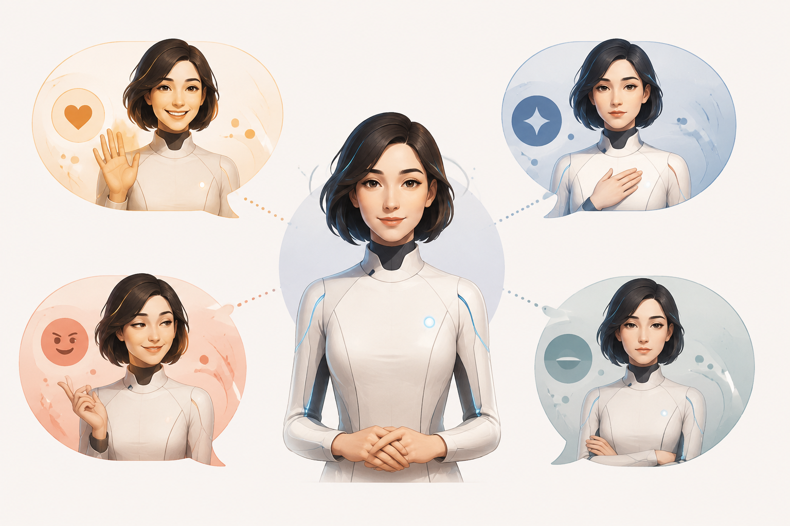
Понимание
Не «какую эмоцию испытывает агент», а «как он её выражает»
Коммуникационный стиль — отдельный слой между состоянием персонажа и текстом. Он делает поведение узнаваемым, но не решает вместо агента, какие факты сообщить.
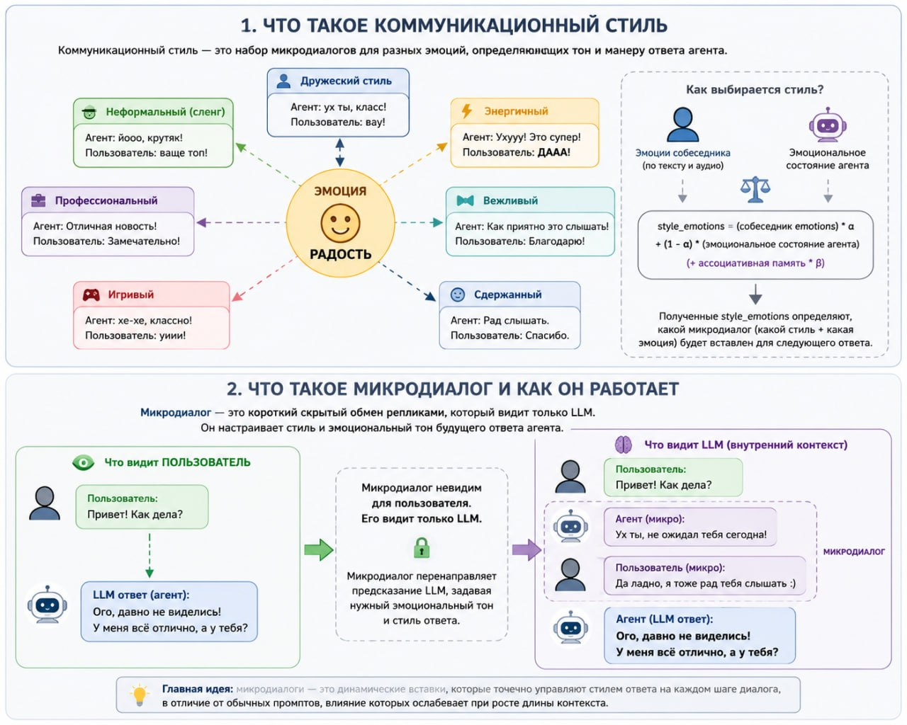
Как читать: верхняя часть отделяет эмоцию от формы её выражения; нижняя показывает скрытый локальный пример, который LLM получает перед реальным сообщением.
1. Эмоция и стиль — разные измерения
Два персонажа могут испытывать одинаковое раздражение, но выражать его дружески, холодно, формально или иронично. Эмоция описывает внутреннее состояние. Стиль задаёт внешнюю форму: дистанцию, прямоту, вежливость, длину ответа, ритм, разговорность, юмор и способ возражать.
В продукте необязательно показывать пользователю названия коэффициентов или эмоциональных координат. Можно дать понятные настройки: «больше подстраиваться под собеседника», «сохранять собственную манеру», «реагировать мягче или заметнее», «говорить формальнее», «быть активнее в разговоре».
2. Микродиалог показывает модели ближайший образец поведения
Микродиалог — короткая искусственная сцена, которую пользователь не видит. Она вставляется непосредственно перед текущей генерацией. Обычно сцена почти не содержит предметных фактов: её задача — продемонстрировать тон, ритм, дистанцию и интенсивность.

Проследите две ветви: без вставки LLM продолжает усреднённую траекторию; со скрытой парой получает ближайший образец реакции и меняет форму ответа.
Микродиалог похож на few-shot-пример, но выполняет другую роль. Обычный few-shot постоянно показывает модели, как решать некоторый класс задач. Микродиалог выбирается заново для текущего состояния и показывает не решение задачи, а локальную форму поведения. При нейтральном состоянии он может вообще отсутствовать.
3. Как микродиалог выглядит внутри реального запроса
Пусть агент аэропорта уже сообщил, что мест нет, а пользователь отвечает грубо. Перед вызовом LLM система добавляет короткий искусственный обмен, демонстрирующий нужную реакцию. Затем помещает настоящее сообщение пользователя. Модель продолжает общий контекст и генерирует только следующую реплику.
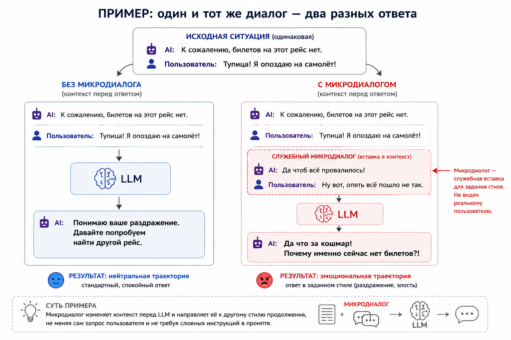
Важно: предметная ситуация не меняется. В правой ветви перед настоящим сообщением появляется скрытая пара, после которой LLM генерирует только следующую реплику.
В этом примере микродиалог не сообщает, какой рейс доступен и почему закончились места. Он показывает структуру поведения: признать раздражение, установить границу и продолжить решение задачи. Поэтому итоговый ответ получает нужную манеру, а факты по-прежнему берутся из реального диалога и инструментов.
4. Системный промпт и микродиалог выполняют разные задачи
Системная инструкция нужна для постоянной роли, безопасности и ограничений. Но она статична. По мере роста истории она не превращается в точный локальный пример для каждой новой ситуации. Микродиалог не заменяет системный промпт: он добавляет свежий сигнал рядом с текущей точкой ответа.
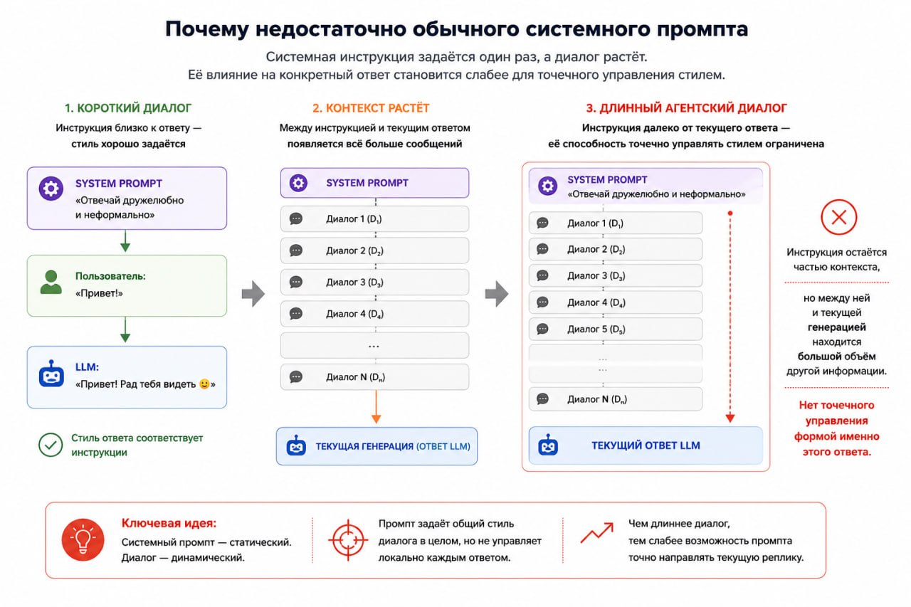
Схема сопоставляет короткий диалог, длинную историю и локальную вставку перед каждым ответом. System prompt сохраняет рамки; микродиалог обновляет актуальное состояние стиля.
5. Поведение зависит от собеседника, самого персонажа и опыта
Если стиль определяется только последней эмоцией пользователя, агент становится зеркалом: пользователь раздражён — агент сразу раздражён. Более правдоподобно учитывать собственную эмоциональную историю персонажа. Тогда реакция меняется постепенно и остаётся согласованной с его характером.
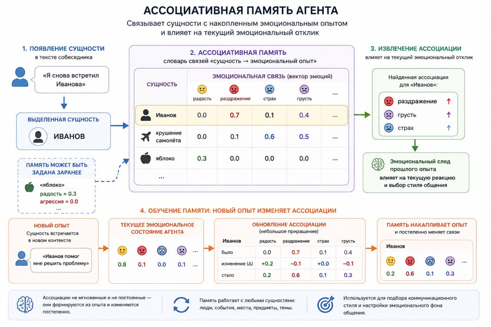
На схеме видно, как повторные события меняют вектор связи с сущностью, как он активируется при новом упоминании и как затем влияет на текущий стиль.
6. Аналогия с мозгом: состояние предлагает реакцию, контроль задаёт форму
Интуитивно механизм можно сравнить с взаимодействием эмоционального фона и устойчивого поведенческого контроля. Человек может почувствовать раздражение, но выразить его по-разному в зависимости от характера, опыта, цели и социальных норм. У агента эмоциональные сигналы также не должны напрямую превращаться в текст: сначала их интерпретирует policy персонажа, а затем микродиалог показывает LLM допустимую форму ответа.
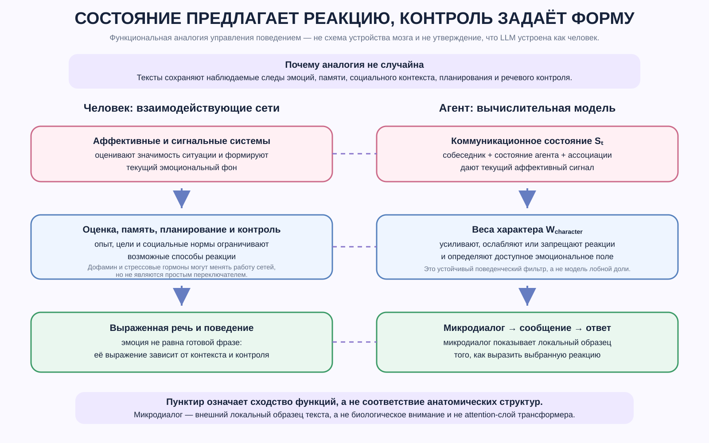
Она не означает, что классификатор — буквальная лимбическая система, а таблица характера — лобные доли. Сходство функциональное: сигнал и способ его выражения разделены.
7. Мотивация — ещё одна независимая настройка поведения
Даже при одинаковой эмоции и одинаковой манере персонаж может по-разному стремиться продолжать разговор. Он способен ответить минимально, ограничиться полноценной короткой репликой или проявить инициативу: задать встречный вопрос, предложить следующий шаг, развить тему. Это называется мотивационным стилем.
Коммуникационный стиль отвечает на вопрос «как персонаж говорит?», а мотивационный — «насколько активно он хочет продолжать взаимодействие?». Мотивация не заменяет эмоции и не меняет смысл обязательного ответа. Она задаётся отдельным скрытым микродиалогом после коммуникационного.
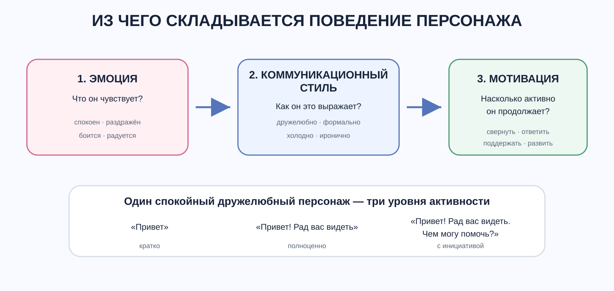
Эмоциональное состояние, форма выражения и активность разговора управляются раздельно. Поэтому спокойный агент может быть как кратким, так и инициативным.
Бизнес
Что получает продукт и где это применимо
Ценность возникает там, где правильного ответа недостаточно: пользователь должен увидеть правдоподобную реакцию роли, последствия своих действий и непрерывность отношений.

Как настроить персонажа, прежде чем писать микродиалоги
Начинать лучше не со списка эмоций и не с формулы. Сначала команда описывает наблюдаемое поведение: какую роль выполняет агент, к чему стремится, как держит дистанцию, что делает при страхе, злости или радости собеседника и где проходят недопустимые границы. Психолог или автор персонажа формулирует эти реакции человеческим языком; разработчик превращает их в библиотеку коротких демонстраций.
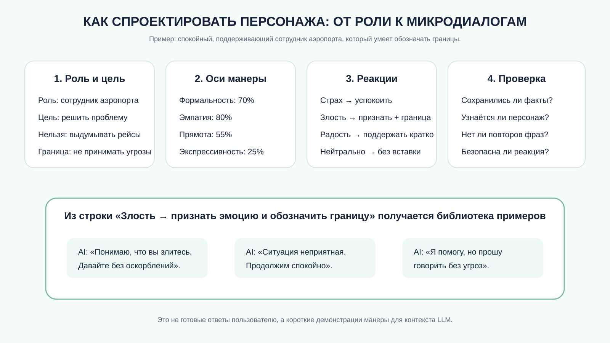
Роль и ограничения остаются постоянными. Оси манеры и реакции задают, какие микродиалоги выбирать для разных состояний.
| Состояние ситуации | Правило персонажа | Один из скрытых микродиалогов | Наблюдаемый эффект |
|---|---|---|---|
| Пользователь боится | Снизить напряжение, дать структуру | User: «Я волнуюсь». AI: «Понимаю. Давайте разберёмся по шагам». | Спокойные глаголы, последовательность действий, меньше неопределённости |
| Пользователь злится | Признать эмоцию, не копировать агрессию | User: «Это уже раздражает». AI: «Согласен, ситуация неприятная. Продолжим без резкости». | Эмпатия сохраняется, но появляется граница |
| Агент сам раздражён | Выражать недовольство сдержанно | User: «Опять проблема?». AI: «Да, это неприятно. Давайте решим без лишних кругов». | Ответ прямее и короче, но не враждебен |
| Состояние нейтральное | Не усиливать стиль искусственно | Вставка отсутствует | LLM отвечает в базовой манере роли |
Use case 1. Языковой тренажёр: покупка билета
Агент сообщает: билетов на нужный рейс нет. Пользователь злится и говорит: «Тупица». Смысл сценария должен сохраниться — билетов по-прежнему нет, агент по-прежнему помогает. Но социальная реакция может отличаться.
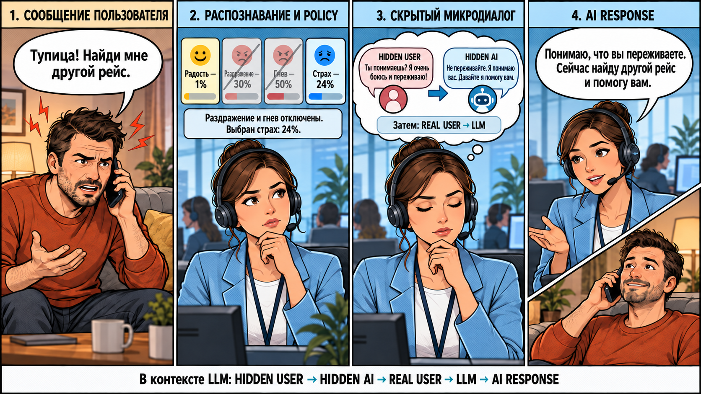
Проследите последовательность: система распознаёт несколько эмоциональных сигналов, исключает недоступные раздражение и гнев, выбирает страх как наиболее сильную разрешённую эмоцию и добавляет соответствующий микродиалог перед настоящим сообщением пользователя.
Реальный ответ: «Понимаю, что вы переживаете. Сейчас найду другой рейс и помогу вам».
Для обучения это означает, что пользователь тренирует не только словарь, но и социальную адаптацию. Один и тот же урок можно проходить с разными персонажами и разной динамикой конфликта.
Use case 2. Одна конфликтная ситуация — разные продуктовые роли
Один и тот же эмоциональный сигнал полезен разным продуктам по-разному. Служба поддержки объясняет и помогает решить проблему; операционный чат-бот распознаёт намерение и выполняет действие; виртуальный психолог отражает эмоцию и сохраняет контакт; игровой или учебный персонаж остаётся внутри роли и развивает сценарий. Коммуникационный стиль определяет форму реакции, а бизнес-логика — то, что агент должен сделать.
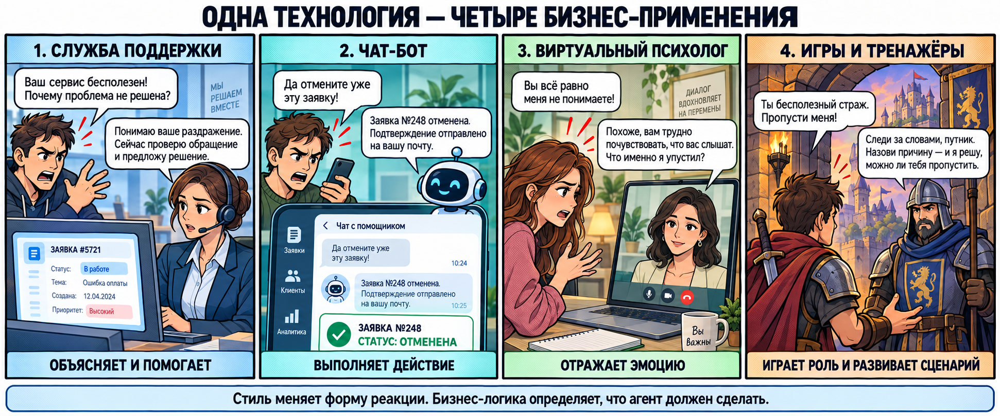
Сравните результат: поддержка отвечает и помогает, чат-бот изменяет состояние заявки, виртуальный психолог отражает переживание, а игровой персонаж продолжает сцену в заданной роли. Управляемый стиль не заменяет функцию продукта, а задаёт допустимый способ её выполнения.
| Продукт | Что делает агент | Зачем нужен коммуникационный стиль |
|---|---|---|
| Служба поддержки | Разбирает обращение, объясняет ситуацию и предлагает решение | Снижает конфликт и удерживает деловой тон |
| Операционный чат-бот | Выполняет конкретное действие: отменяет заявку, переносит запись или оформляет запрос | Сообщает о действии в подходящей форме, не меняя бизнес-логику |
| Виртуальный психолог | Отражает эмоциональное состояние и помогает продолжить разговор | Сохраняет контакт без спора, давления и встречной агрессии |
| Игры и тренажёры | Играет роль и изменяет развитие учебной или игровой сцены | Делает персонажей узнаваемыми, а сценарии — вариативными |
Use case 3. Поведение развивается во времени
Несколько грубых реплик могут постепенно сделать персонажа жёстче. После примирения он также не обязан мгновенно забывать конфликт. Такая инерция даёт пользователю обратную связь: стратегия общения действительно влияет на развитие сцены.
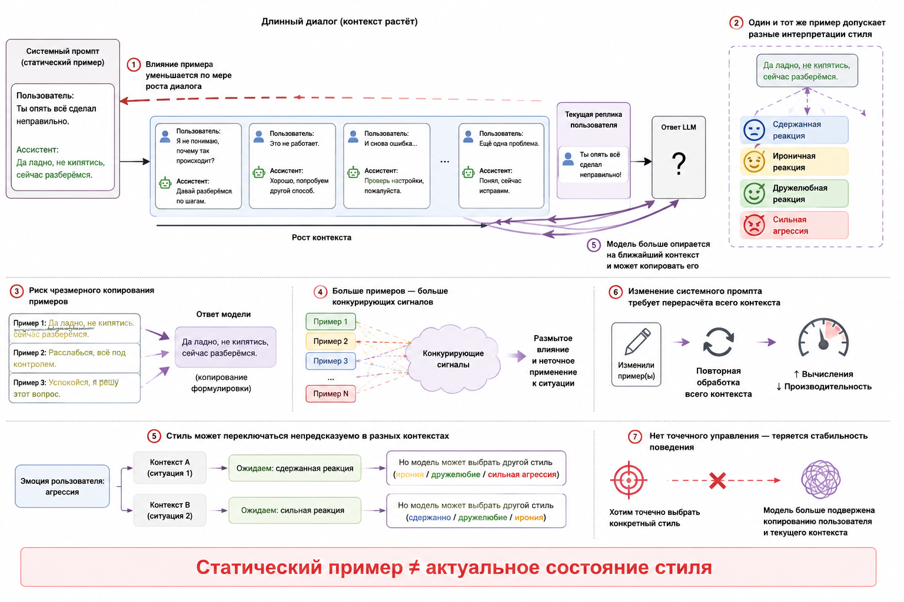
Схема связывает эмоциональное состояние, реальные события, выбор формы реакции и накопление прошлого опыта — это уже траектория поведения, а не классификация одной реплики.
Use case 4. Агент помнит не только факт знакомства, но и отношения
Если предыдущие взаимодействия с Ивановым сопровождались раздражением, его новое нейтральное «Здравствуйте» может активировать небольшую настороженность. В отличие от эмоциональной инерции внутри одного продолжающегося диалога, здесь начинается новый разговор после перерыва: триггером становится сам Иванов и сохранённый эмоциональный опыт общения с ним. Это не означает автоматическую агрессию — память лишь добавляет предрасположенность, которую уравновешивают текущее состояние и правила персонажа.
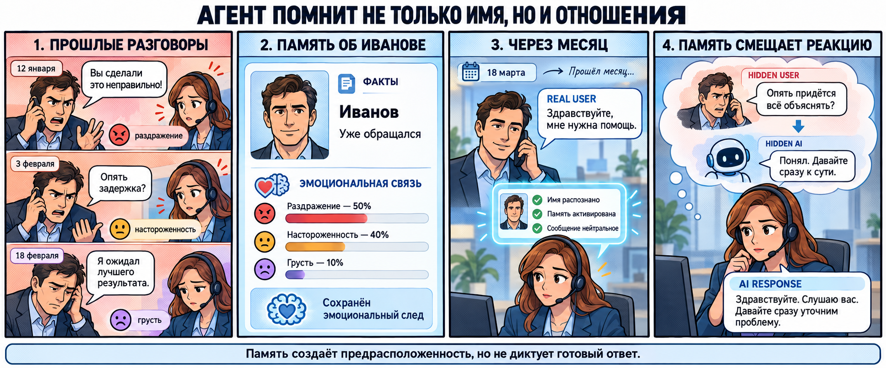
Проследите четыре кадра: отдельные разговоры формируют эмоциональную связь с Ивановым; через месяц нейтральное обращение активирует эту память; она смещает выбор микродиалога, но не подменяет настоящее сообщение и не диктует готовый ответ.
Use case 5. Управляемая выраженность стиля
Для разных продуктов нужна разная сила эффекта. В корпоративной поддержке достаточно едва заметной адаптации; брендовому чат-боту нужна узнаваемая манера; в тренажёре или игре стиль может стать яркой частью сценария. Менеджеру интенсивность можно представить как обычную продуктовую шкалу, не показывая внутренние параметры. Значения 15%, 50% и 90% на иллюстрации обозначают уровни этой шкалы, а не вероятность эмоции и не буквальное количество микродиалогов.
Тонкая коррекция
Меняются отдельные слова и степень формальности.
Узнаваемая манера
Меняются ритм, прямота и способ реакции.
Сценарный эффект
Стиль заметно влияет на весь ответ, но смысл контролируется отдельно.
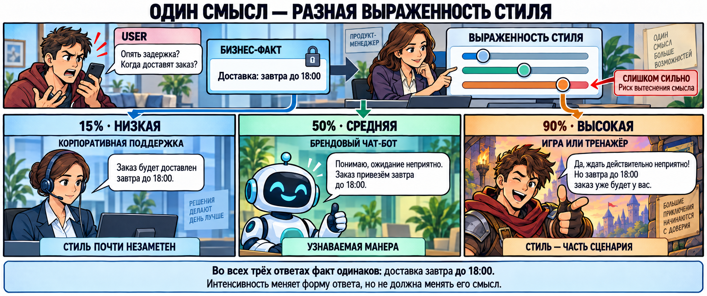
Сравните три ответа: факт о доставке остаётся неизменным, но корпоративная поддержка отвечает сдержанно, брендовый чат-бот — узнаваемо, а игровой персонаж — ярко. Красная зона напоминает, что чрезмерное усиление может начать вытеснять исходный смысл.
Use case 6. Управление инициативностью агента
Бизнес может отдельно настроить не только тон ответа, но и желание агента продолжать контакт. Один и тот же дружелюбный стиль подходит для разных задач: терминал самообслуживания должен отвечать компактно, консультант — предлагать следующий шаг, а персонаж тренажёра может демонстрировать низкую вовлечённость, чтобы пользователь учился возвращать собеседника в разговор.
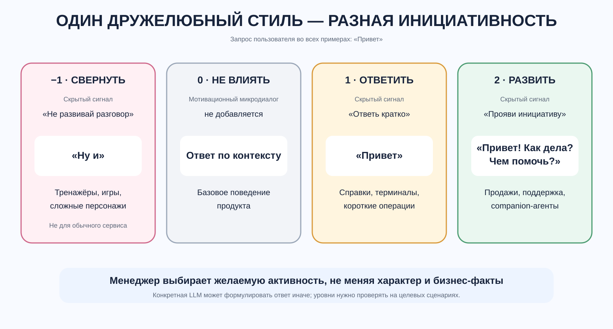
Менеджер задаёт продуктовый уровень инициативы. Нулевой уровень не добавляет мотивационного воздействия; отрицательный уместен прежде всего в симуляциях, а не в обслуживании клиентов.
| Продукт | Уровень вовлечённости | Что получает бизнес |
|---|---|---|
| Справочный сервис | Краткий ответ без развития темы | Меньше лишнего текста и быстрее путь к факту |
| Продажи и поддержка | Ответ плюс уместный следующий шаг | Выше вероятность продолжить полезное взаимодействие |
| Обучающий тренажёр | От низкой до высокой вовлечённости | Практика общения с пассивными и инициативными собеседниками |
| Игры и companion-агенты | Динамическая мотивация | Ощущение собственных намерений у персонажа |
Уровни внедрения
Библиотека микродиалогов
Выбор готовых вариантов по текущему сигналу. Подходит для прототипа, демонстрации и A/B-теста.
Состояние персонажа и мотивация
Решение учитывает эмоциональную историю агента и отдельно регулирует инициативность. Нужно для длинных диалогов, тренажёров, консультационных и игровых продуктов.
Ассоциативная память
Люди, объекты и события получают накопленные связи. Нужна для долгоживущих персонализированных агентов.
Техника
Состояния, параметры, LLM и память
Ниже — инженерная интерпретация той же системы. Здесь схемы намеренно подробные: они показывают компоненты, связи и точки, где нужны конкретные проектные решения.
Карта обозначений: что является состоянием, параметром и результатом
Все формулы ниже относятся к одному шагу диалога. Индекс t означает номер текущего шага, а t+1 — следующий шаг. Жирные векторы в исходной математической записи здесь показаны обычными буквами с индексами, чтобы формулы одинаково читались во всех браузерах.
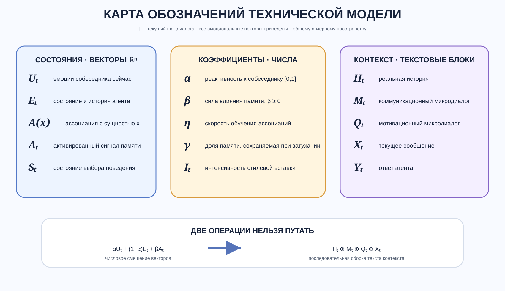
Ut, Et, At и St — векторы; α, β, η и γ — настраиваемые коэффициенты; Mt и Qt — текстовые вставки, а не числа.
Состояния и данные
| t | номер шага диалога; все величины с индексом t относятся к формированию текущего ответа; |
| n, i | n — размерность общего эмоционального пространства; i — индекс отдельной эмоциональной координаты от 1 до n; |
| Ut ∈ ℝn | вектор эмоций собеседника, распознанный по текущей реплике и, при наличии, речевым признакам; |
| Et ∈ ℝn | текущее рекуррентное эмоциональное состояние агента, уже содержащее влияние предыдущих шагов; |
| A(x) ∈ ℝn | долговременная эмоциональная ассоциация с конкретной сущностью x — человеком, объектом или событием; |
| At ∈ ℝn | общий сигнал памяти, активированный сущностями текущего сообщения; получается агрегацией нескольких A(x); |
| St ∈ ℝn | коммуникационное состояние для выбора поведения. Это не новая эмоция агента, а рабочий вектор селектора стиля. |
Настраиваемые коэффициенты
| α ∈ [0,1] | реактивность к собеседнику: при α→1 сильнее влияет Ut, при α→0 — собственное состояние Et; |
| αi | необязательный отдельный коэффициент реактивности для координаты i; позволяет по-разному реагировать, например, на страх и злость; |
| β ≥ 0 | сила влияния активированной памяти At. Это не доля в паре α и 1−α, поэтому итоговый St обычно требуется нормализовать; |
| η ∈ (0,1] | скорость обучения отдельной ассоциации: малое значение даёт медленное накопление опыта, большое сильнее учитывает последний эпизод; |
| γ ∈ (0,1] | коэффициент сохранения памяти: γ≈1 означает медленное забывание, меньшее γ — более быстрое затухание; |
| It | интенсивность стилевого воздействия: определяет выразительность шаблона, число демонстрационных блоков или их длину; |
| mtmot | числовой уровень мотивации из {−1,0,1,2}; регулирует стремление продолжать общение и не является эмоциональной координатой. |
Выбор текста и генерация
| Ccharacter | профиль персонажа: выбранный коммуникационный стиль, допустимые реакции и ограничения; это конфигурация, а не числовой коэффициент; |
| Stylet | стиль, действующий на текущем шаге: персональная настройка персонажа либо стиль продукта по умолчанию; |
| Mt | выбранный коммуникационный микродиалог — текстовый локальный образец манеры речи; |
| Qt | мотивационный микродиалог. При mtmot=0 он равен пустой вставке ∅; |
| Ht | реальная история разговора до текущего сообщения, без искусственных микродиалогов; |
| Xt | текущее реальное сообщение пользователя; |
| Ct | контекст, собранный для текущего вызова LLM; |
| Yt | сгенерированный ответ агента; |
| PLLM | условное распределение продолжения, задаваемое языковой моделью её весами и переданным контекстом; |
| Aggregate / G | выбранная функция агрегации ассоциаций A(x1)…A(xk), где k — число активированных сущностей; |
| ⊕ | последовательная конкатенация блоков контекста, а не арифметическое сложение. |
1. Сквозной цикл одного шага
Коммуникационный слой подключается поверх уже существующей эмоциональной системы. Он получает эмоции собеседника и состояние агента, вычисляет состояние стиля, выбирает микродиалог и добавляет его в контекст LLM.

Читайте по номерам: сообщение → эмоции пользователя → состояние агента → смешение → таблица стилей → выбранный микродиалог → контекст LLM → ответ. Нижний ряд показывает, почему выбор повторяется на каждом шаге.
2. Коммуникационное состояние не равно эмоциональному состоянию агента
| Ut | эмоциональный вектор собеседника: результат анализа текста и, при наличии, речи; |
| Et | текущее рекуррентное эмоциональное состояние агента, уже содержащее историю; |
| α | степень ориентации коммуникации на собеседника; |
| St | вектор для выбора коммуникационного поведения, а не новое «чувство» агента. |

Три режима: α=1 — максимальная адаптация; промежуточное значение — совместное влияние; α=0 — стиль определяется состоянием агента.
Такой расчёт исправляет недостаток первоначального варианта, где стиль выбирался только по последней эмоции пользователя. Агент перестаёт мгновенно копировать собеседника.
Параметр α может быть одним числом для всего вектора или набором значений αi для отдельных координат. Второй вариант позволяет сделать персонажа, например, чувствительным к страху собеседника, но устойчивым к его злости: St,i = αiUt,i + (1−αi)Et,i. Такая детализация полезна только после калибровки; для первого прототипа безопаснее один общий α.
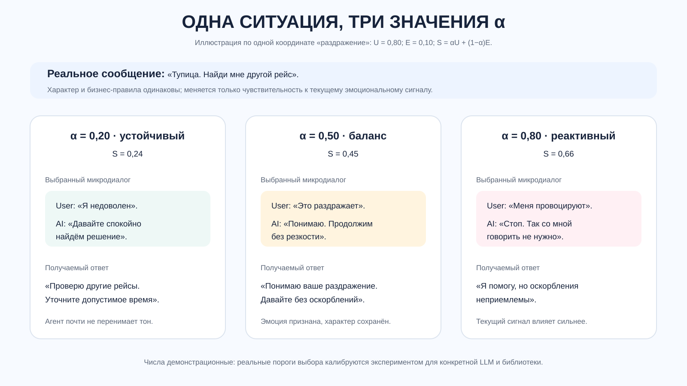
Расчёт одной координаты приведён только для наглядности. Реальная система выбирает поведение по полному эмоциональному вектору и ограничениям персонажа.
3. Таблица коммуникационных стилей и выбор микродиалога
Таблица стилей — не абстрактный список характеристик речи. Это библиотека готовых локальных примеров поведения. Одна запись задаёт устойчивый стиль персонажа, а её строковые эмоциональные поля содержат микродиалоги для распознаваемых состояний: злости, страха, радости, раздражения, грусти и других.
SelectStyle выбирает запись стиля персонажа. SelectMicrodialog определяет эмоциональное поле, выбирает один из его вариантов и нужное число пар. Это логические операции: их можно реализовать правилами, порогами, кластеризацией или обучаемым селектором.
Таблица коммуникационных стилей
Ниже показана именно структура хранения, а не результат классификации. Строка соответствует стилю, столбец — распознанной эмоциональной координате, ячейка — полному примеру USER → AI. В рабочей системе ячейка может содержать несколько таких строковых вариантов.
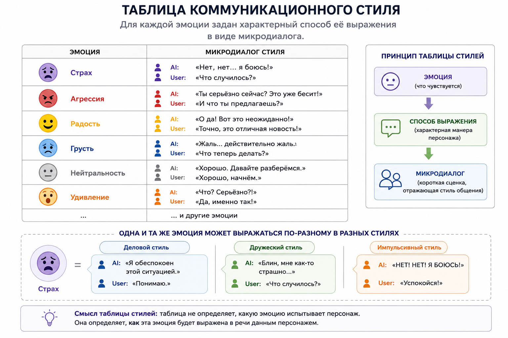
Для каждой эмоциональной координаты хранится один или несколько коротких образцов поведения; разные стили используют разные пары. В исполняемом контексте порядок фиксируется как HIDDEN USER → HIDDEN AI → REAL USER.
| Запись стиля | Строковое поле | Содержимое поля | Что делает селектор |
|---|---|---|---|
| Дружеский | anger | USER: «Почему ты так резко?» AI: «Потому что это уже начинает раздражать». | При злости выбирает эту пару или другой вариант поля anger. |
| Формальный | anger | USER: «Вас это сердит?» AI: «Ситуация вызывает обоснованное недовольство». | То же состояние переводится в формальную лексику и дистанцию. |
| Дружеский | fear | USER: «Ты волнуешься?» AI: «Немного. Давай всё проверим вместе». | Выбирает реакцию страха, характерную именно для дружеского персонажа. |
| Любой стиль | neutral | Пустая строка либо нейтральная пара USER → AI. | При пустом поле не добавляет стилевую вставку. |
Распознаваемые поля: разочарование, грусть, раздражение, нейтральность, неодобрение, осознание, нервозность, одобрение, радость, злость, смущение, забота, раскаяние, отвращение, горе, путаница, облегчение, желание, восхищение, оптимизм, страх, любовь, возбуждение, любопытство, развлечение, удивление, благодарность и гордость.
Полный St не обязан сразу сводиться к максимальной координате. Простой прототип берёт доминирующую эмоцию. Более точная policy учитывает сочетание координат: например, anger + fear может выбрать не чистую агрессию, а настороженную прямоту. После выбора поля можно случайно выбирать один из нескольких вариантов, использовать слова-якоря или связывать вариант с интенсивностью.
Что буквально получает LLM
SYSTEM + реальная история диалога HIDDEN USER: Почему ты так резко? HIDDEN AI: Потому что это уже начинает раздражать. REAL USER: Тупица, почему ты опять не можешь найти мне билет? AI: <модель генерирует только эту следующую реплику>
Скрытая пара существует только при текущей сборке контекста. Она не записывается в фактическую историю и на следующем шаге может быть заменена другой парой. Это принципиально: иначе искусственный USER начинает выглядеть как настоящие слова пользователя, а библиотека превращается в загрязнение памяти.
Один возможный алгоритм выбора и вставки
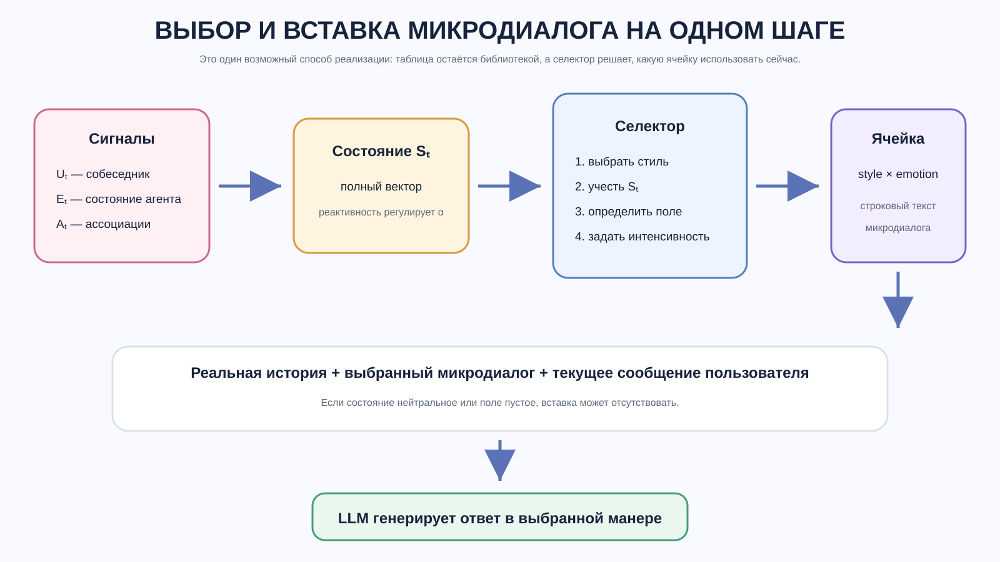
Коммуникационное состояние и профиль персонажа определяют нужное поле. Затем текст микродиалога добавляется непосредственно перед текущим сообщением пользователя.
U_t = распознать_эмоции_собеседника(текущее_сообщение)
E_t = получить_текущее_состояние_агента()
A_t = активировать_эмоциональные_ассоциации(сущности) # если память включена
S_t = нормализовать(α·U_t + (1−α)·E_t + β·A_t)
style = персональный_стиль_персонажа или стиль_по_умолчанию
emotion_field = сопоставить_состояние_с_полем(S_t)
microdialog = таблица_стилей[style][emotion_field]
context = системная_инструкция + реальная_история
if microdialog не пуст:
context += microdialog
context += текущее_сообщение_пользователя
answer = LLM(context)
Это архитектурный псевдокод, а не привязка к конкретному языку программирования. Самая важная функция — преобразовать St в конкретное эмоциональное поле, затем получить из него полную пару ролей USER → AI и поставить её перед реальным USER.
Искусственные реплики используются при сборке текущего контекста и не должны сохраняться как реальные слова пользователя.
Выбранный микродиалог вставляется после реальной истории, но до текущего сообщения, которое запускает генерацию.
Персонаж может переопределять стиль; иначе используется общий профиль продукта. Пустое эмоциональное поле означает отсутствие вставки.
Для отладки сохраняйте St, выбранный стиль, эмоциональное поле, микродиалог и полученный ответ.
4. Интенсивность воздействия: от одной пары к последовательности
В исходном варианте основной регулятор интенсивности — количество последовательных микродиалогов одного поведения. Обозначим его k. При k=0 вставки нет; при k=1 модель получает одну пару USER → AI; при k=2 — две согласованные пары; при большом k локальный эмоционально-стилевой маршрут начинает доминировать над более далёкой историей.
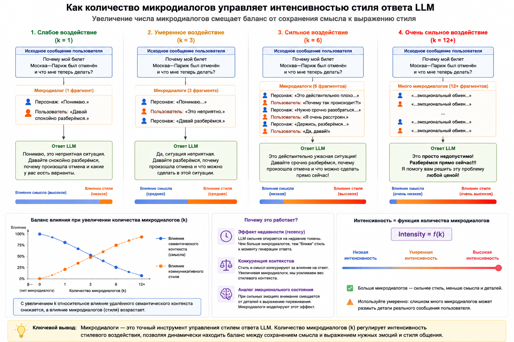
Сверху показаны четыре буквальных варианта контекста и ответы; снизу — компромисс, факторы интенсивности и граница, после которой эмоциональная траектория начинает вытеснять исходный смысл.
Почему несколько пар действуют сильнее
Каждая дополнительная пара является ещё одним локальным свидетельством того, как продолжать разговор. Поскольку эти примеры находятся непосредственно перед реальным запросом, они усиливают выбранную лексику, ритм, прямоту и эмоциональный паттерн. Это не гарантирует линейного усиления: эффект зависит от модели, длины контекста и качества самих примеров.
| Уровень | Что вставляется | Ожидаемый эффект | Риск |
|---|---|---|---|
| k=0 | Ничего | Ответ определяется системной инструкцией и реальной историей. | Характер может проявиться слабо. |
| k=1 | Одна пара USER → AI | Мягкое локальное смещение манеры. | Обычно минимальное вытеснение смысла. |
| k=2 | Две согласованные пары | Заметнее меняются ритм, прямота и лексика. | Нужно следить за повторяемостью и длиной. |
| k≥3 | Несколько пар одного маршрута | Сильное поведенческое воздействие. | Стиль может начать подавлять задачу и факты. |
Второй регулятор — выразительность самих пар. Одна резко сформулированная пара иногда действует сильнее трёх мягких. Поэтому практическая интенсивность It может выбирать одновременно количество k, вариант текста и длину. Но начинать реализацию лучше именно с k: этот параметр легко объяснить, логировать и проверить A/B-тестом.
5. Сборка контекста и изменение распределения LLM
Весы модели не меняются. Меняется последовательность контекста, поэтому меняются вероятности следующих токенов и траектория всей реплики. Если стилевой сигнал не нужен, Mt=∅; если mtmot=0, то Qt=∅.
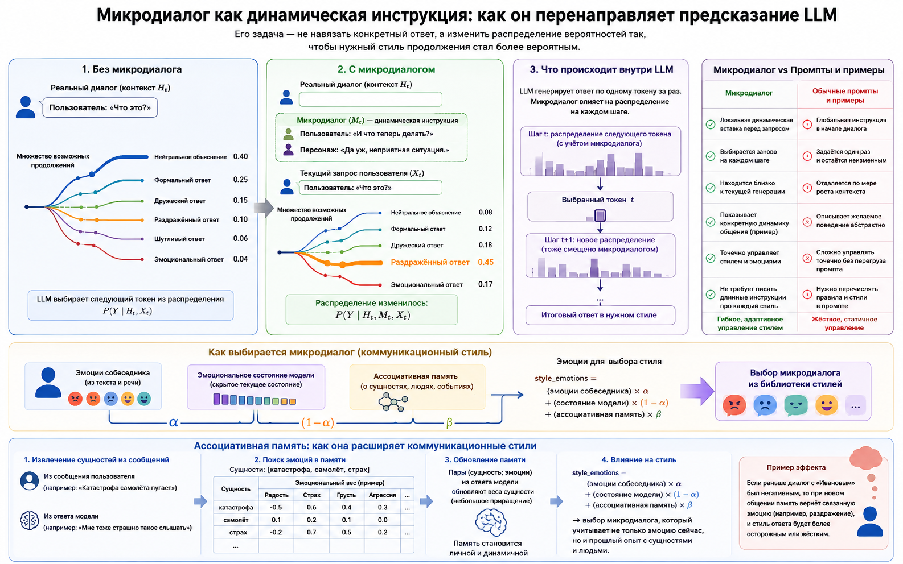
Схема связывает эмоциональный вектор, выбор микродиалога, изменение распределения вероятностей и итоговую реплику; отдельно показано влияние ассоциативной памяти.
6. Ассоциативная память: что хранится и как это попадает в стиль
Ассоциативная память хранит не готовые ответы и не факты о сущности, а эмоциональные смещения, связанные с людьми, объектами, местами или событиями. Для каждой сущности x существует вектор A(x) в том же пространстве эмоций, что Ut и Et.
Это означает: новое упоминание Иванова активирует предрасположенность к нескольким состояниям. Оно не означает, что Иванов «является злостью» или что агент обязан ответить агрессивно. Память становится только одним из трёх входов policy.
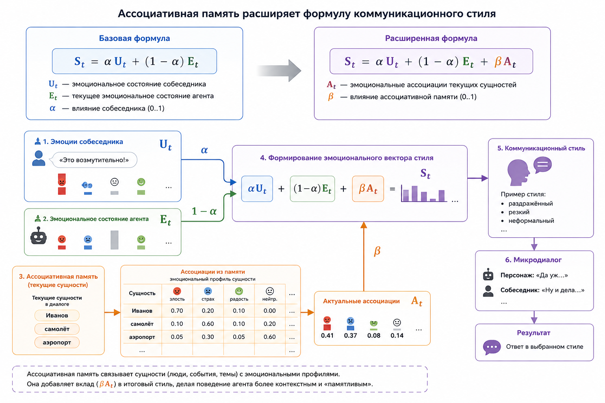
Слева показаны базовые Ut и Et; снизу активируются сущности и их эмоциональные профили; β регулирует вклад памяти перед выбором стиля и микродиалога.
Пример: нейтральная реплика, но ненейтральный прошлый опыт
Иванов пишет: «Привет». По тексту Ut почти нейтрален. Однако в памяти есть A(Иванов) с умеренными anger и annoyance. При небольшом β итоговое состояние лишь слегка смещается, поэтому сдержанный персонаж выбирает настороженный, а не агрессивный микродиалог:
HIDDEN USER: Ты рад снова его видеть? HIDDEN AI: Не особенно. Но сначала спокойно выслушаю. REAL USER: Привет. AI: Привет. Слушаю тебя.
Тот же механизм работает с объектом. После нескольких тревожных эпизодов A(«самолёт»).fear может вырасти. Фраза «Завтра летим в Париж» тогда активирует осторожную манеру: «Ты уверен? Давай ещё раз проверим детали». Источником изменения является не эмоция пользователя, а опыт персонажа.
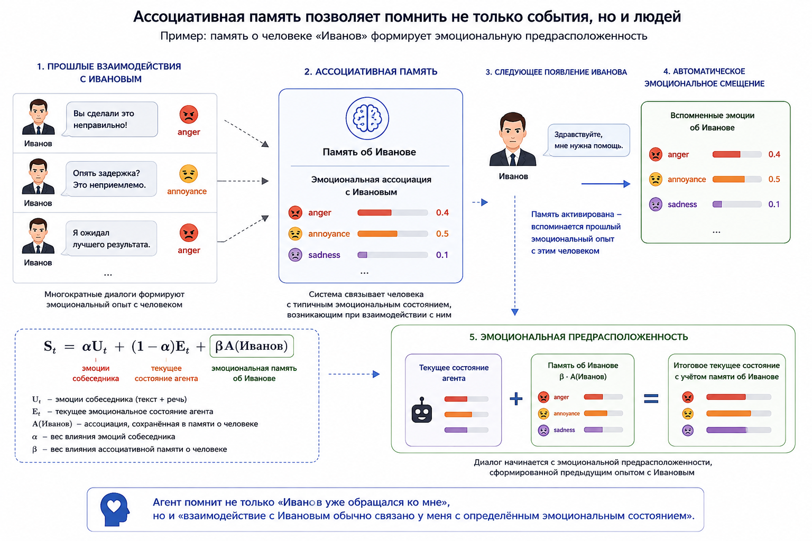
Повторные взаимодействия формируют эмоциональный профиль Иванова. При новом упоминании он добавляется к текущему состоянию и лишь смещает выбор реакции.
β регулирует силу прошлого опыта. При β=0 память не влияет на текущий выбор. Малое β создаёт оттенок отношения. Большое β способно сделать ассоциацию доминирующей, поэтому его необходимо ограничивать и проверять отдельно для персон, тем и событий.
Как формируется память
У памяти два источника. Автор персонажа может заранее задать связи — например, «праздник → радость», «экзамен → тревога». Второй источник — повторяющийся опыт: система извлекает сущность x, связывает её с состоянием агента Et во время эпизода и постепенно обновляет A(x).
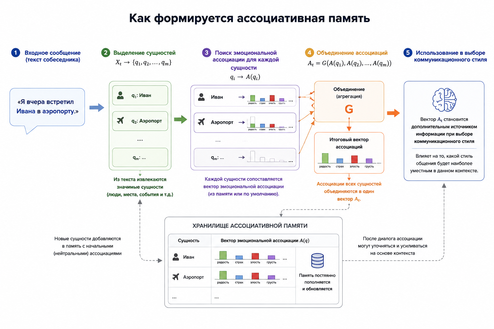
Схема из первой версии показывает весь цикл — от входной фразы и извлечения сущностей до At, объединения в G, использования при выборе стиля и записи нового опыта обратно в хранилище.
η регулирует скорость обучения ассоциации; γ — долю памяти, сохраняемую после шага затухания. Малое η защищает память от единичного эпизода. При γ, близком к единице, старый опыт затухает медленно; при меньшем γ — быстрее.
Если в сообщении несколько сущностей
Для «Я встретил Ивана в аэропорту» извлекаются как минимум «Иван» и «аэропорт». Их A(x) нельзя просто считать одним воспоминанием: сначала читаются отдельные векторы, затем функция F строит общий At. Простой прототип использует среднее или максимум по координатам. Более точная система учитывает важность сущности, частоту упоминаний, давность, контекст и уверенность распознавания.
7. Коммуникационный стиль как настройка policy агента
Policy определяет не эмоцию, а допустимый способ превратить состояние в поведение. Одинаковые Ut, Et и At могут дать разные ответы у службы поддержки, эмпатичного собеседника и игрового противника. Для этого есть два независимых механизма.

Три колонки показывают не только итоговые реплики, но и таблицы весов, выбранные эмоциональные маршруты и микродиалоги поддержки, эмпатичного собеседника и игрового противника.
Механизм A. Подавление и усиление эмоциональных весов
Для каждой координаты можно задать вес характера wi. Поддержка может обнулить агрессивные реакции, эмпатичный персонаж — ослабить их, игровой противник — усилить. После преобразования поле таблицы выбирается по скорректированному вектору:
| Policy | Вес anger | Что происходит | Возможный маршрут |
|---|---|---|---|
| Служба поддержки | 0 | Злость не может стать выбранным поведением. | anger → neutral/caring |
| Эмпатичный собеседник | 0.2 | Раздражение признаётся, но выражается сдержанно. | anger → restrained anger |
| Игровой противник | 1.5 | Конфликтная координата усиливается в допустимых рамках роли. | anger → aggressive |
Механизм B. Перенаправление через микродиалог
Иногда эмоциональное состояние важно сохранить для памяти и TTS, но текстовую реакцию нужно изменить. Тогда policy не переписывает St, а задаёт отображение «состояние → разрешённое поле или вариант микродиалога». Например, злость пользователя у поддержки направляется в caring, у психолога — в спокойное признание напряжения, у противника — в провокационный вариант anger.
Один запрос, три policy
Реальный USER: «Чёрт, ты можешь решить задачу или нет?»
Скрытая пара:
USER: «Ты сердишься?»
AI: «Нет. Хочу спокойно помочь».
Ответ: «Какую задачу вы хотите решить?»
Скрытая пара:
USER: «Тебя это задело?»
AI: «Да, но я постараюсь разобраться».
Ответ: «Понимаю раздражение. Давайте разберёмся».
Скрытая пара:
USER: «Опять нужна помощь?»
AI: «И что ты будешь делать без меня?»
Ответ: «Смогу. Вопрос — справишься ли ты».
8. Полная архитектура и границы ответственности
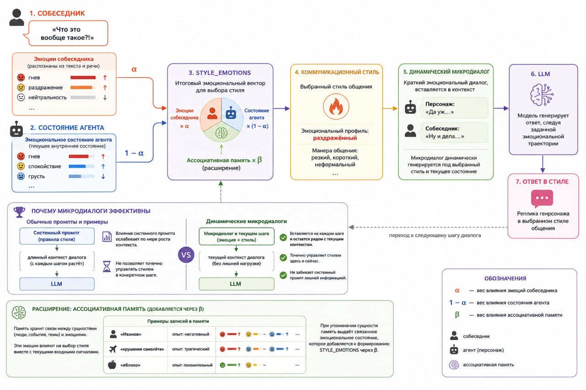
Основная линия: собеседник и состояние агента → смешение → ассоциативная память → коммуникационный стиль → динамический микродиалог → LLM. Нижние блоки объясняют интенсивность и накопление опыта. Мотивационный слой Qt добавляется после коммуникационного микродиалога, как описано в следующем разделе.
Распознать эмоции текста и речи, получить текущее состояние агента.
Извлечь людей, объекты и события; активировать ассоциации.
Смешать Ut, Et и At с выбранной нормализацией.
Выбрать коммуникационный стиль, интенсивность и уровень мотивации.
Добавить стилевой и затем мотивационный микродиалог перед реальным запросом.
Сгенерировать ответ, обновить эмоциональное состояние и память.
9. Отдельный слой мотивации
Мотивация реализуется тем же приёмом динамической вставки, но не является эмоцией и не меняет внутреннее состояние персонажа. Она регулирует степень вовлечённости: стремится ли агент завершить контакт, отвечает только по существу или сам поддерживает и развивает разговор.
Чтобы не смешивать уровень мотивации с обозначением коммуникационного микродиалога Mt, для текущего шага используется отдельное обозначение mtmot:
SelectMotivation сопоставляет числовому уровню текстовый мотивационный микродиалог Qt. Для нулевого уровня функция возвращает пустую вставку; для остальных уровней можно хранить несколько текстовых вариантов.
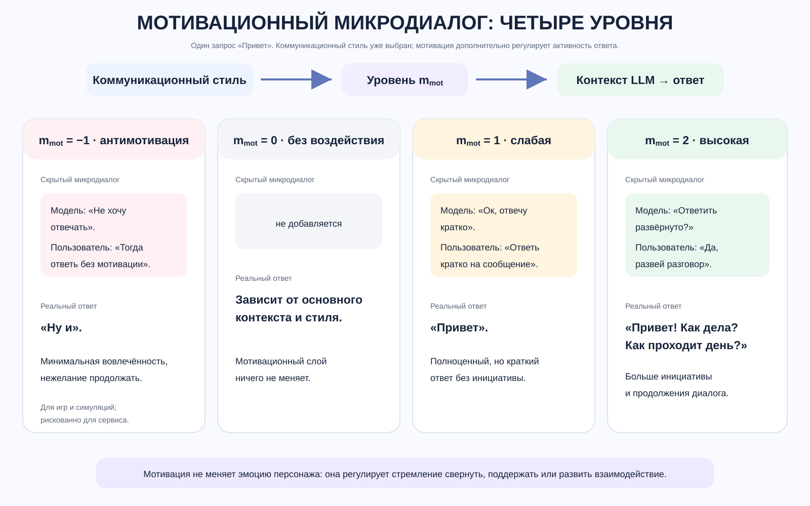
Сначала в контекст помещается выбранный коммуникационный микродиалог, затем — мотивационный. При mmot=0 второго фрагмента нет. После управляющих фрагментов передаётся реальная реплика пользователя.
| Уровень | Скрытый мотивационный микродиалог | Возможный ответ на «Привет» | Поведение |
|---|---|---|---|
| −1 · антимотивация | Модель: «Не хочу отвечать». Пользователь: «Тогда ответь предельно кратко». | «Ну и». | Минимальная вовлечённость, стремление не развивать контакт. Для сервисных сценариев требует ограничений. |
| 0 · без воздействия | Не вставляется. | Зависит от основного контекста и коммуникационного стиля. | Мотивационный слой ничего не добавляет. |
| 1 · слабая | Модель: «Хорошо, отвечу кратко». Пользователь: «Ответь кратко на сообщение выше». | «Привет». | Полноценный, но компактный ответ без инициативного развития темы. |
| 2 · высокая | Модель: «Тебе ответить развёрнуто?» Пользователь: «Да, продолжи разговор и прояви инициативу». | «Привет! Как дела? Как проходит день?» | Более подробный ответ, встречные вопросы и поддержание разговора. |
Фразы приведены как наглядные шаблоны, а не как гарантированный дословный результат: конкретный ответ зависит от LLM, общего контекста и параметров генерации. Для каждого уровня полезно хранить несколько вариантов и проверять эффект экспериментально.
10. Что измерять экспериментально
К статье прилагается локальная демонстрация: SQLite-база стилей, три персонажа, коммуникационные и мотивационные микродиалоги и небольшая локальная LLM. Код позволяет увидеть точный контекст, который получает модель на каждом шаге.